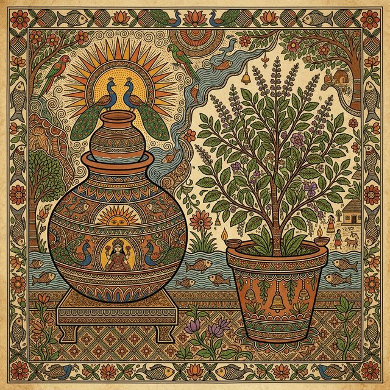
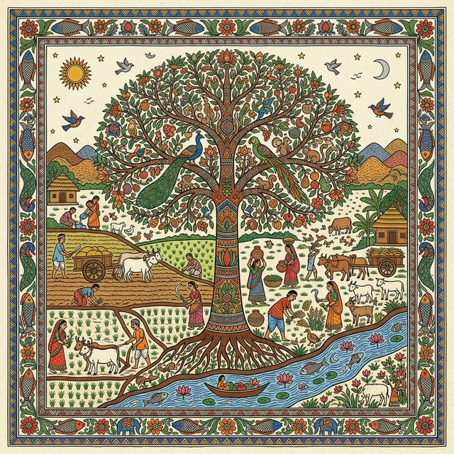

The Ethnography and Ecological Philosophy of the Maithili New Year. Celebrate the joy, warmth, and cooling blessings.
The Maithili civilization, historically situated in the culturally rich Mithila region, represents one of the most ancient and continuous agrarian societies in the Indian subcontinent. Geographically bounded by the Mahananda River in the east, the Ganges in the south, the Gandaki River in the west, and the Himalayan foothills in the north, this region encompasses modern districts in Bihar, Jharkhand, and Nepal.
Jur Sital is celebrated annually with immense fervor on the 14th or 15th of April, acting as the definitive marker for the first day of the Maithili calendar, which is strictly guided by the traditional Tirhuta Panchang. Etymologically, the nomenclature of the festival reveals its core physiological and psychological intent: the term "Jur" translates to connection, settling, and cooling, while "Sital" explicitly denotes coldness and tranquility.
Unlike a multitude of contemporary and historical New Year celebrations across the globe that are characterized by grand feasts, pyrotechnics, and hyper-active consumption, Jur Sital uniquely revolves around nature, water, and conscious rest. It is a deliberate, community-wide cessation of labor designed to welcome the harsh, unforgiving South Asian summer by emphasizing the critical importance of staying cool, remaining hydrated, and deeply connecting to the earth.

The observance of Jur Sital is inextricably linked to ancient Hindu solar calendrical mathematics, specifically rooted in the Surya Siddhanta. The festival aligns precisely with the Nirayana Mesha Sankranti, marking the astronomical transition of the Sun into the zodiac sign of Aries (Mesha). The foundational divergence between Western Gregorian calculations and the Hindu sidereal system lies in the accounting for axial precession, adjusting for cosmic shift by adding approximately 23 degrees of trepidation.
| Maithili Month | Gregorian Equivalent | Associated Season (Ritu) | Climatic Profile |
|---|---|---|---|
| Baiśākha (वैशाख) | April - May | Grishma (Summer) | Intense pre-monsoon heat; period of Jur Sital. |
| Jyeṣṭha (ज्येष्ठ) | May - June | Grishma (Summer) | Peak solar intensity and drought risk. |
| Āshāḍha (आषाढ़) | June - July | Varsha (Monsoon) | Arrival of the southwest monsoon; planting season. |
| Śrāvaṇa (श्रावण) | July - August | Varsha (Monsoon) | Heavy rainfall; period of agricultural maturation. |
| Bhādra (भाद्र) | August - September | Sharad (Autumn) | Retreating monsoon. |
| Āśvina (आश्विन) | September - October | Sharad (Autumn) | Moderate temperatures; harvest preparation. |
| Kārtika (कार्तिक) | October - November | Hemant (Pre-Winter) | Post-monsoon cooling; period of Chhath Puja. |
| Mārgaśīrṣa (मार्गशीर्ष) | November - December | Hemant (Pre-Winter) | Progressive cooling; primary harvest. |
| Pauṣa (पौष) | December - January | Shishir (Winter) | Coldest temperatures of the year. |
| Māgha (माघ) | January - February | Shishir (Winter) | Continued cold; gradual lengthening of days. |
| Phālguna (फाल्गुन) | February - March | Vasant (Spring) | Warming temperatures; period of Holi. |
| Chaitra (चैत्र) | March - April | Vasant (Spring) | Final moderate month before the new solar cycle. |
| Event / Astrological Transition | Date | Exact Time / Duration (IST) |
|---|---|---|
| Mesha Sankranti Moment | Tuesday, April 14, 2026 | 09:38 AM - 09:39 AM |
| Punya Kala (Auspicious Period) | April 14, 2026 | 06:09 AM to 01:50 PM |
| Maha Punya Kala | April 14, 2026 | 06:09 AM to 08:27 AM |
| Ruling Nakshatra | April 14, 2026 | Purva Ashadha |
Jur Sital does not exist in a cultural vacuum; it is part of a broad, pan-Asian tradition of solar New Year celebrations occurring synchronously in mid-April. However, while the astronomical trigger is identical, the sociocultural manifestations differ significantly.
A deeper analysis reveals a striking philosophical divergence in the Maithil approach. While Baisakhi, Bihu, and Poila Boishakh are characterized by high-energy communal output and elaborate hot feasts, Jur Sital operates on an ideology of metabolic and thermal deceleration. The festival explicitly mandates the lowering of both literal and figurative heat, elevating collective non-action—the cessation of cooking and avoidance of heat generation—to a sacred duty.
| Region / Community | Festival Nomenclature | Primary Ritual Focus and Cultural Manifestation |
|---|---|---|
| Mithila | Jur Sital / Aakhar Bochhor | Hydration, resting the hearth, consuming cold food, mud play, elder blessings. |
| Punjab / Haryana | Baisakhi / Vaisakhi | Harvest thanksgiving, Bhangra dances, communal Langar feasts, martial arts. |
| Assam | Bohag Bihu / Rongali Bihu | Spring agricultural cycle initiation, energetic folk dances, feasting on delicacies. |
| Kerala | Vishu | Prosperity, viewing auspicious items at dawn, gifting coins, multi-flavor communal feasts. |
| West Bengal | Poila Boishakh | Commercial renewal, new ledger books, cultural rallies, fresh Hilsa fish. |
| Tamil Nadu | Puthandu | Domestic purification, Kolams at doorsteps, Mangai Pachadi (life's balance). |
| Odisha | Maha Bishuba Sankranti | Preparation of Bela Pana (cooling Bael fruit drink), cultural observances. |
The rituals of Jur Sital are explicitly designed to foster environmental resilience against the severe threat of pre-monsoon drought. The sequence begins with storing water overnight in earthen, copper, or brass vessels. At dawn, this temperature-regulated, sanctified water is sprinkled by elders onto the heads of younger family members accompanied by the blessing: "Jurail rahiye, thandaiyail rahiye" (May you stay cool, may you remain tranquil).
The reach of this ritual extends to domestic animals, agricultural implements, and local flora. The deliberate watering of plants and trees is an acute acknowledgment of interconnectedness, functioning as ecological stewardship.
The tradition of "Thal-Kado" (playing with mud) utilizes fresh, wet silt extracted from the beds of local water bodies. From an ecological engineering perspective, this acts as a highly effective, decentralized desilting mechanism for vital village ponds, preparing them to capture the impending monsoon rains. Furthermore, applying nutrient-rich pond silt to the human body acts as a natural thermoregulator and prophylactic against summer heat rashes.
Long before modern environmental movements advocated for "Earth Hour" or carbon footprint reduction, the "Basiya Pavani" (resting the stove) naturally instantiated a massive, synchronized reduction in thermal emissions, firewood consumption, and smoke generation across the entire region. Jur Sital stands as the original eco-conscious festival.

Jur Sital challenges the global paradigm of festive feasting by engaging in a profound ritual of culinary abstinence known as Basiya Pavani (the festival of stale food). It begins on the eve (Satuani) with the consumption of highly nutritious Sattu (roasted gram flour) and an exhaustive cooking session.
On Jur Sital, the traditional earthen stove (Chulha) is designated a day of rest and recuperation, venerated as Chulha Maharani. This prevents thermal pollution in the home, providing a passive cooling sanctuary. The community consumes exclusively Basiya Khaana—food prepared the previous night cooled to room temperature.
| Component Category | Traditional Preparations | Culinary & Nutritional Significance |
|---|---|---|
| Primary Carbohydrates | Baasi Bhaat, Poori, Dalpoori | Overnight soaked rice creates resistant starch beneficial for gut health with a cooling effect. |
| Curries & Protein | Kadhi-Bari / Badi-Bhaat | Yogurt-based curry with gram flour dumplings provides essential probiotics and hydration. |
| Vegetable Preparations | Tarua, Timan (Bitter gourd) | Bitter profiles align with Ayurvedic principles to pacify Pitta (heat) dosha. |
| Seasonal Specialties | Sajivan (Moringa), Aaloo-Baigan | Moringa is dense in micronutrients, bolstering the immune system. |
| Condiments & Relishes | Kachchi Kairy Aamgura, Tikola | Raw mango is rich in Vitamin C, acting as a potent preventative against heatstroke. |
| Confections | Tilkor, Gulab Jamun, Malpua | Sesame provides slow-releasing energy; jaggery aids digestion. |
The controlled practice of Basiya Khaana naturally develops strains of probiotic bacteria. Consuming these mildly fermented foods introduces beneficial microbes that fortify the gut microbiome and boost immunological resistance against seasonal viral outbreaks, serving as a culturally mandated public health intervention.
Internal migration has established a vast Maithil diaspora in urban centers like Ludhiana, Punjab. In these environments, traditional rituals adapt—for instance, substituting fresh pond mud with commercially available multani mitti. Organizations like the Mithila Samaj play a crucial role in preserving identity by organizing communal feasts and cultural programs that recreate the hyper-local agrarian rites in a modern, often high-rise setting.
Ultimately, Jur Sital stands as a profound testament to the Maithili civilization's historical capacity to synchronize human life with the uncompromising rhythms of the earth. By ritualizing water conservation, instituting system cooldowns via Chulha Maharani's rest, and pivoting to probiotic diets, Jur Sital transmits a vital intergenerational mandate: survival, prosperity, and communal harmony depend fundamentally upon ecological reverence and metabolic restraint.
The origins of Jur Sital are steeped in the rich mythological tapestry of the Mithila region. A prevailing legend suggests that the practice of conserving cool water and soothing the earth was initiated by King Janaka of Videha to appease nature deities during a severe ancient drought. The cooling rituals are also symbolically linked to providing relief to the sun god, Surya, after his intense journey.
The transition of seasons has been beautifully immortalized by the legendary 14th-century Maithili poet Vidyapati. His verses often capture the melancholic beauty of the approaching scorching summer, the longing for rain, and the cultural necessity of Jur Sital to bring momentary respite to the parched lands and the aching hearts of lovers separated during the harsh season.
Whether you're in the heart of Mithila or anywhere around the world, here is how you can observe Jur Sital at home.
Jur Sital originated in the historic Mithila region, spanning northern Bihar and the eastern Terai of Nepal. Today, it is celebrated globally by the diaspora.
Listen to traditional Maithili folk tunes sung during the harvest and new year.
Share your memorable Jur Sital experiences with the community.
"I remember my grandmother waking us up with freezing cold water on our heads. We used to be so angry, but now I miss it!"
- Rakesh, Patna"The Badi-Bhaat next day always tastes better than anything freshly cooked. It's magic."
- Neha, LudhianaMay this Jur Sital bring peace, prosperity, and coolness to your life.